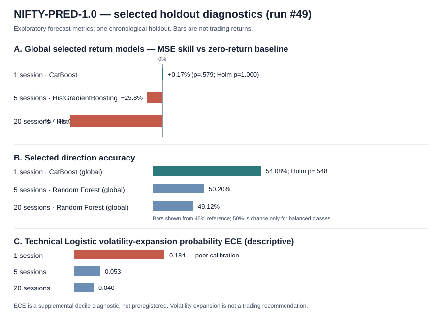
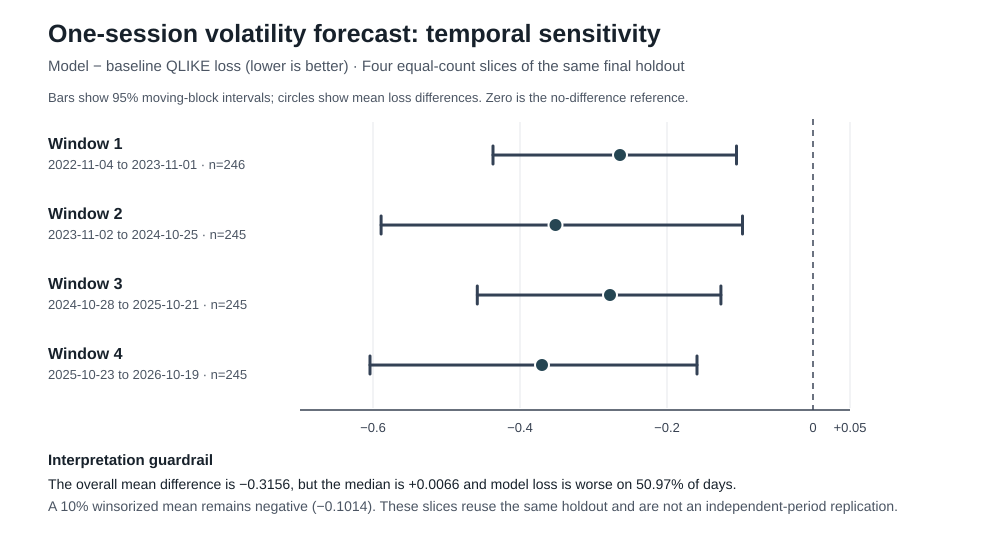

Protocol: NIFTY-PRED-1.0 · Scope: forecasting only; no trading strategy.
Workflow: NIFTY prediction research #39699761966 · Artifact SHA-256: 6f2cd6bb302763e5e972fb54e447bfbd47bba0c8cd3cfe3fd024f9cf6062c8dc · Sanitized aggregate summary
| Target | Horizon | Selected model | Result | Interpretation |
|---|---|---|---|---|
| Log return | 1 session | Global CatBoost | MAE 0.005788 vs zero 0.005803; MSE skill −0.26%; Holm p=1.000 | No supported improvement over zero-return baseline. |
| Log return | 5 sessions | Global CatBoost | MAE 0.013623 vs zero 0.013730; MSE skill +0.85%; Holm p=1.000 | Small, statistically unsupported gain. |
| Log return | 20 sessions | Global CatBoost | MAE 0.027171 vs zero 0.026252; MSE skill −1.70%; Holm p=1.000 | Worse than zero-return baseline by MAE/MSE skill. |
| Direction | 1 session | Global CatBoost | Accuracy 53.01%; balanced accuracy 52.82%; Brier skill −0.0009 | No significant direction edge. |
| Volatility proxy | 1 session | Global ExtraTrees | QLIKE difference −0.3156; 95% block CI [−0.4230, −0.2101]; Holm p=4.26×10⁻⁷ across 299 comparisons | Strong single-holdout forecast result; replicate before any use. |
| Volatility expansion | 20 sessions | Technical Logistic | Accuracy 66.43%; Brier skill +0.133; Holm p=.0582 across 33 selected outcomes | Exploratory; does not pass the 0.05 familywise threshold. |
| Index level | 1/5/20 sessions | Global ElasticNet / ElasticNet / Ridge | MSE skill vs persistence −16.4% / −8.9% / −34.5% | Significantly worse than persistence after correction. |


The four slices partition the same holdout and are sensitivity diagnostics, not independent-period replication.
NSE official retrieval returned no recognized data rows; USD/INR and gold failed OHLC validation; WTI had non-positive OHLC and was excluded. Twenty weekend-dated target rows remain flagged for exchange-calendar review. Options, FII/DII, PCR, breadth, timestamped news and point-in-time corporate-action data were not verified as acquired. This is a single holdout and no independent-period replication has been run. No option-chain backtest, brokerage/spread/tax/slippage simulation, Paytm Money execution analysis or live deployment was performed.
The historical tester report refers to earlier artifacts and does not approve run #39699761966. Current sign-off awaits the correction workflow and independent review.